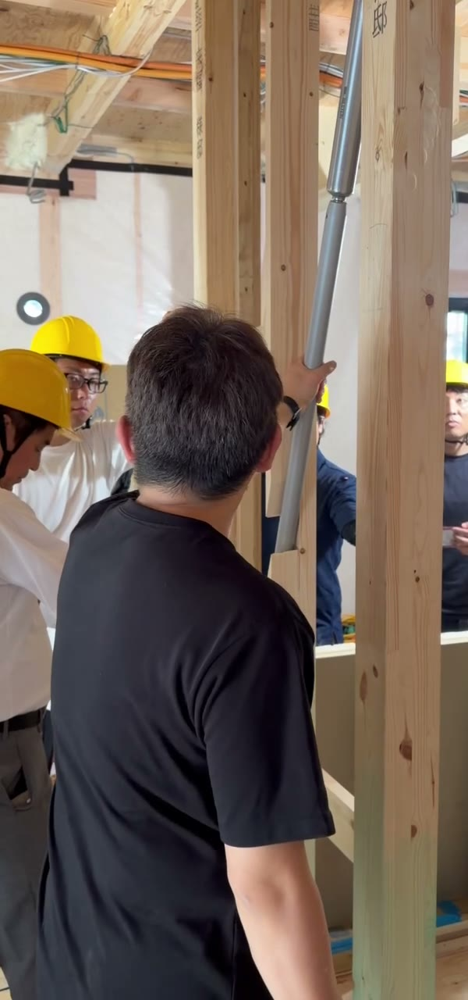
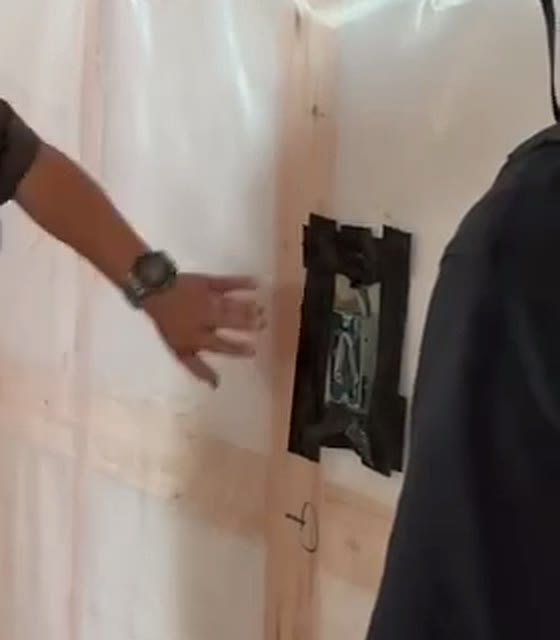
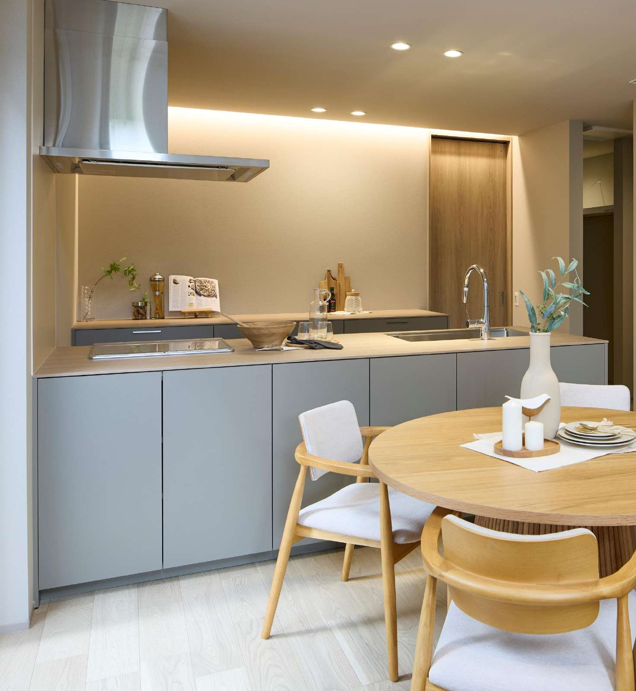

LIFE X 月2棟目標達成MTG
月2棟への
17回の研修を、お客様の順番に
2026年11月13日（金）
今日の流れ 2
登録から契約まで、全部を1時間で通します。
0:00 地図 月2棟への地図と、全社の数字どこを上げると何棟になるか 8分
0:08 1章 つながる11/6の決めごとを確認 2分
0:10 2章 会う約束をする3原則を確認 2分
0:12 3章 初回面談の準備聞いた答えを、準備に変える 1分
0:13 4章 初回面談本部の型・聞く・間 12分
0:25 5章 性能の話し方目的→数値は最低限→設計・間取り・空調 18分
0:43 6章 お金月々・総額・トータルコスト 5分
0:48 7章 2回目から契約まで確認・テストクロージング・迷い 9分
0:57 8章 自分の数字と、今週から参考書の使い方 3分
4月から17回。別々に教わったことを、1本につなげます。
LIFE Xを知る4〜6月
4/27 LIFE Xを知る
5/11 商品力
5/25 購買心理
6/8 標準仕様
6/22 クロージング
つながる・会う7月・11月
7/17 月2棟の型
7/24 接続率を上げる
7/31 数字で見る
11/6 メールで会う約束
面談を磨く8月
8/7 商談を磨く
8/21 聞く力
8/28 間とテストクロージング
性能を語る9〜10月
9/4 太陽光とトータルコスト
9/11 防蟻
9/18 耐震×制振
10/2 断熱×気密×換気
10/9 壁の中の結露
10/16 構造見学会
渡す・選ばせる10月
10/23 アプローチブック
10/30 キッチン
今日は、これを「お客様が進む順番」に並べ直します
お客様の道のりは、8つの段でできています。
0
登録資料請求・来場予約
集客 自社リストへの案内も11/2 案内ページ
1章
話せる電話がつながる
当日に1本目 時間帯を変える7/24・11/6
2章
会う約束アポ
7項目 日程はこちらから7/17・11/6
3章
準備面談の前日まで
答えを準備に 土地・ローン・他社7/17
4・5・6章
初回面談聞く・性能・お金
今日の山場 型・聞く・性能の話し方8月・9〜10月
7章
2回目1週間以内
ブックの感想 プラン・土地・資金10/23
7章
申込進めていいですか
確認するだけ テストクロージング8/28
7章
契約土地・事前審査の後
申込はスタート 土地付け→総額確定7/17
下の小さな日付は、その段を詳しく扱った研修の回です。詳しい中身と元の資料へのリンクは参考書にまとめています。
全社の今の数字。815人の登録から、40棟。
815人 登録
話せた35.1%
286人 話せた
約束72.7%
208人 会う約束
面談88.0%
183人 面談
契約21.9%
40棟 契約
一番大きく減るのは「登録→話せた」 、次が「面談→契約」 。今日の1章と、4〜7章がそこに当たります。
全加盟店様の累計。LIFE X加盟店ポータル 本部用データ（2026/11/1取得）。率はひとつ前の段に対する割合。
登録100人あたりで考えると、1か所より、全部を少しずつ。
今の率のまま
話せた 35.1%
4.9 棟
12月の目標の率
話せた 40% 30%
7.7 棟
4つの段を、少しずつ上げると（例）
話せた 40% 80% 90% 30%
8.6 棟
接続率40%は、9月（45.5%）・10月（51.4%）に登録したお客様では、もう超えています。
今の率は前の枚の全社累計（11/1）。12月の目標は「接続率 全社40%以上・契約率30%」（10/12 本部共有）。右の列は計算の例で、目標ではありません。
変われることは、もう数字に出ています。
9・10月に登録したお客様
2.4 倍 話せたお客様2.3 倍 お会いする約束
5〜8月の月平均との比較。9月登録のお客様からは、すでに11棟の契約。
7月から取り組んできた決めごと
誰が掛けるか、名前で決めた 登録の当日に1本目 出ない方にはSMSとメール 同じことを、面談から契約までの段にも。
登録した月ごとの人数。全加盟店様の合計。LIFE X加盟店ポータル 本部用データ（2026/11/1取得）。右の3つは7/24研修「決めるのは3つ」、11/6研修より。
8 当日は流します
第1章
つながる
差がつくのは、トークのうまさではなく
つながる店が決めている3つのこと。
1 登録の当日に、 気づいたその日に掛ける。遅くとも翌日。誰が掛けるかは、名前で決めておく。
「LIFE Xの資料のご請求、ありがとうございます」から。会社名は後で。
7/24・電話メールの型 2章
2 時間帯を 同じ時間に掛け続けない。昼に出なければ夕方、翌日は別の時間帯に。
昼休み・夕方・18時以降。店ごとに「回数と時間帯」を決める。
7/24 3社の進め方
3 電話以外の 電話はこちらの時間、メールとSMSはお客様の時間で届く。出ない時間をメールで埋める。
区切った後も、月1のイベント案内で接点は切らない。
11/6 メール研修
出なかった方は、最初の1週間が勝負です。
当日1本目に出ない
SMS 名乗りと、折り返し不要の一言。知らない番号の着信が「誰だったか」分かるだけで、次の電話に出てもらえる。
翌日2〜3本目
メール 会う理由と、日時を3つ。お客様の空いた時間に読まれる。選んで返すだけで済む形に。
3〜7日目時間帯を変えて
電話＋見学会の案内 動画のURLも添える。同じ時間に掛け続けない。昼に出なければ夕方、翌日は別の時間帯に。
1か月後区切った後
近況伺い 売り込まず、名前を思い出してもらう。月1のイベント案内で、接点は切らない。
一度「不通」になって、その後話せた方の4人に3人は、1週間以内 に話せています（25人中19人）。
流れは11/6研修「不通になってからの1週間」。数字はLIFE X加盟店ポータル 本部用データ（2026/11/1取得、ステータスの手動変更が記録された9/16以降）。
11 当日は流します
第2章
会う約束をする
電話の目的は2つ。
約束が取れる電話の3原則。
1 建物・性能の話は 電話で説明すると、お客様は「もう分かった」になって会う理由が消える。
「そのあたりも、お会いした時に図でお見せしますね」
電話メールの型 3章
2 質問を並べず、 7項目を順番に聞くと尋問になる。お客様の話に乗って、自然に埋めていく。
答えにはその場で返す。「〇〇なんですね、それなら…」
7/17・電話メールの型 3章
3 日程は 「いつがいいですか」は返事の手間を増やす。電話は二択、メールは日時3つ。
「〇日の〇時か、〇日の〇時、ご都合いかがですか」
7/31・11/6
電話で埋めたい7項目 と、その答えの使い道。
聞くこと なぜ聞くか（面談で何に使うか） ① 規格住宅を選んだきっかけ 面談の最初に話す話題が決まる。デザインか、価格か、性能か。 ② 家づくりを始めた時期 どれくらい調べているか。他社の説明を聞いた後かどうか。 ③ 土地の有無 ありなら住所か図面をもらって事前に調べる。なしなら探し方と相場感。 ④ 引越ししたい時期 スケジュールの逆算。あえて余白を残して聞く。 ⑤ ローンの事前審査 他社で言われた金額があれば聞いておく。資金の話の入り方が変わる。 ⑥ 希望エリア 土地の相場と、総額の目安を準備できる。 ⑦ 他社の検討状況 初回の入り方を変える。他社の悪口は言わない。「比べるポイントを、お会いした時に」。
7/17研修・電話メールの型 3章。順番どおりに聞かなくてよい。全部埋まらなくても、会う約束を優先する。
「考えておきます」で、電話を切らない。
✕ よくある終わり方
「では、ご検討ください。また連絡します」
電話を切ってから「LINEを交換しませんか」とSMS
「一度お打ち合わせはいかがでしょうか」
次の連絡手段も日時もないまま切ると、そこから先は「不通」と同じ。
→
○ 何かを持って切る
日時が決まらなければ、次の連絡手段 を決めて切る
通話中にSMSとQRを送り、LINE交換まで 済ませる
「〇日の〇時か、〇日の〇時」とこちらから 出す
「日時」か「次の連絡手段」。どちらかを必ず持って電話を切る。
7/31研修、7/24研修（通話中のSMS・QR）、11/6研修。
15 当日は流します
第3章
初回面談の準備
約束が取れた時点で、面談はもう始まっています。
聞いた答えごとに、前日までにやること。
電話で分かったこと 面談までに用意するもの 土地あり 住所か図面をもらい、入るプランと配置を調べ切る 土地なし 希望エリアの土地相場と、土地込みの総額の目安 他社で金額を聞いた その金額に何が含まれていそうか、比べ方の資料 他社を検討中 家選びの判断の軸（ブック）を最初に出す準備 デザイン重視 好みに近いプランを2〜3案
約束が取れてから、前日まで
その日のうちに お礼と日程の確定確定の連絡で場所・駐車場・持ち物 （土地の資料、事前審査の結果があれば） 前日 に確認の連絡ポータルのステータスをすぐ更新 準備が多いほど、お客様は「この会社は自分のことを分かっている」と感じます。
左：電話メールの型 3章（7項目の答えの使い方）。右：11/6研修「返信が来てから」（本部作成の例）。
17
第4章
初回面談
ここまでの研修で、商談の順番は5通り出てきました。1本 に決めます。
初回から契約まで、この順番で進めます。
初回面談
1 許可を取る時間・手に入るもの・止めてもいい
2 聞く今の住まいの不満 → 理想の暮らし
3 セミナー響くところだけ厚く／性能は目的から
4 お金月々いくらなら安心か → 総額の目安 → 光熱費込み
5 テストクロージング4つの確認
6 ブックで締めるページを絞って渡す
7 次回を日付で決めるその場で
2回目（1週間以内） ブックの感想から入る → プラン・土地・資金のすり合わせ → 申込は「進めていいですか」の確認だけ
申込の後 土地付け → 事前審査・総額の確定 → 契約
感情が先、理屈が後。
7/17（許可取り・総額・スケジュール）、8/7（Gハウスの型）、第3回・第4回研修（不満から入る・感情が先）、10/23（ブックで締める）を本部で1本にまとめたもの。
最初の90秒で、聞いてもらえる状態を先に作る。
言い方の例
「最初にお約束だけさせてください。お話は60分 で、家づくりとお金の話を全部お見せします。〇〇様の総予算と月々のお支払いがその場で見える ようになります。遠慮なく止めてください 。無理にお勧めすることはありません。」
① 時間を約束する 終わりが見えない話は、聞く気になれない。
② 手に入るものを約束する 聞き終えたら何が分かるのか。
③ 止めていいと伝える 断る自由があるから、安心して聞ける。
7/17研修 第2章「冒頭90秒の許可取り」。言い回しは例なので、御社の言葉に直してお使いください。
人は「今の家が嫌だ」で動く。不満から聞く。
聞き方は、この1セットを回すだけ
共感「それは大変
→
復唱相手の言葉を
→
関連質問「それって
話す量は 7 : 3
お客様が7、営業が3。
第3回研修（5/25 購買心理）の黄金フロー、8/21研修「聞く力」、8/7研修。
何を聞いたかは、5つの軸で◯△×をつける。
人 誰が決めるか
物 どんな家・
金 予算・月々・
時 いつまでに
敵 他社・
面談の後に、必ずこれを問う 「あと何をすれば、契約か？」
答えられないなら、5つのどこかに×か△が残っています。次の面談は、そこを埋めるために使う。
ふりかえりシートの使い方 面談の前5分 ：5軸の仮説を書く 面談の後10分 ：答え合わせ 面談中には出さない
8/7研修「商談を磨く」（5軸の◯△×・あと何をすれば契約か）、商談ふりかえりシートの使い方。
説明したくなった時が、一番聞くべき時。
✕ 聞いているつもりの営業
「耐震は気になりますか？ うちは等級3で…」と、聞かれる前に説明
「でも」「しかし」から入る
「つまり〇〇ですよね」と先回りして決めつける
「うーん…」にかぶせて説明を足す
→
○ 聞ける営業
「そこ、気になりますよね。もう少し聞かせてください」
共感 → 復唱 → 一呼吸
質問のあとは1.5秒 待つ
「うーん…」には、うなずいて5秒 待つ
8/21研修「聞く力」、8/28研修「間の取り方」。
23
第5章
性能の話し方
9月から6回、性能を学んできました。
性能は、この3段で話します。
1 目的 何がうれしいか 快適に暮らせること。光熱費を抑えられること。建てた日の性能が、長く続くこと。
「冬も薄着で過ごせて、光熱費も抑えられる家です」
›
2 数値は最低限 根拠を1つだけ 1つのテーマで出す数字は1〜2個まで。数字を並べるほど、お客様は比べ始める。
「断熱の数字はUA値0.46。大阪や東京なら等級6相当です」
›
3 設計・間取り・空調 暮らしの話で終える 性能があるから、窓を大きくできる。エアコンの台数と容量を決められる。最後は間取りの話に戻す。
「だから、このリビングはこの1台で足ります」
10/26 本部の打ち合わせで顧問から示された方針「目的（快適＋ランニングコスト）→数値は最低限→設計・間取り・空調計画」。
同じ断熱の話でも、入り口で結果が変わる。
✕ 数字から入る
「UA値は0.46で、C値は0.5以下、第一種換気で、窓は樹脂のAPW330で…」
お客様の頭の中：「他社は0.4って言ってたな」「等級7じゃないんだ」。
→
○ 目的から入る
「今のお住まい、冬の朝はリビングが寒くないですか？」
「LIFE Xは、冬も薄着で過ごせて、光熱費も抑えられるように作っています。断熱の数字で言うとUA値0.46です」
「だから窓を大きくしても寒くならない。このプランのリビングも…」
不満 → 目的 → 数字1つ → 間取り。4章で聞いた不満に、性能をつなげる。
言い回しは本部作成の例。目的の言葉は第2回研修「標準仕様」（仕様→なぜ→メリット）。
テーマ別の「目的の一言」と「数字1つ」。
テーマ 目的の一言（これだけ覚える） 数字は1つ 耐震×制振 「1回耐えるだけでなく、2回目・3回目も建てた日の強さを保つ家です」 全棟、許容応力度計算で耐震等級3 断熱・気密 「冬も薄着で過ごせて、光熱費も抑えられます」 UA値0.465〜7地域で等級6相当 換気 「家の中の空気を、きれいなまま入れ替えます」 第一種換気 結露 「性能が長く続くように、壁の中に湿気をためません」 0.2mmの防湿気密シート 施工 「気密の数字は、図面ではなく現場の手間で決まります」 シートが切れやすい5か所を処理 キッチン 「オプションを足さなくても、これで完成です」 約78万円分が標準 太陽光 「建てた金額だけでなく、住んでからの支払いで比べてください」 光熱費込みのトータルコスト
9/18・10/2・10/9・10/16・10/30・9/4の各研修の内容から、本部で一言にまとめた例。次の枚から、テーマごとに「目的→数字→設計」と切り返しを見ます。
耐震×制振：「揺れている最中、家族は無事か」 まで話す。
目的 倒れないだけでなく、2回目・3回目の揺れでも、建てた日の強さが続く。
数値は最低限 全棟、許容応力度計算で耐震等級3 制振ダンパーevoltzを標準搭載（振動台実験で計8回の加振に耐えた：evoltz Times Vol.2） よくある質問 「制振があるなら、等級は下げてもいい？」evoltzは強さを足す部材ではなく、強さを長持ちさせる部材です。 だから等級3と両方そろえています。

構造見学会（8/30）で見たevoltz
9/18研修 教科書・参考書、10/16構造見学会。地震のケガの30〜50%は家具の転倒などが原因（東京消防庁）で、間取りでは家具の置き場の話につなげられる（参考書）。
断熱・気密・換気：「等級7じゃないの？」 にも目的で返す。
目的 冬も薄着で過ごせる。光熱費を抑えられる。家の中の空気がきれい。
数値は最低限 UA値0.46（「等級6」と言い切らず、「大阪・東京などの5〜7地域で等級6相当」） C値0.5以下は推奨値（測定はオプション。測っていないのに「C値0.5です」とは言わない） 第一種換気
「等級7じゃないんですか？」 「等級7もいい家だと思います。ただ、断熱の数字は建てた日の数字です。」
10/2研修（断熱×気密×換気）教科書・参考書、10/23研修「言い返されたら」。具体的な差額はその場で数字を作らず、確認して後日お答えする。
結露：「建てた日の性能が、長く続くか」 の話。
目的
「断熱等級も耐震等級も、建てた日の数字です。壁の中に湿気がたまると、その性能が少しずつ落ちていきます。LIFE Xは、そこで妥協しません。」
お客様にはコップで十分
冷たい飲み物のコップに水滴がつくのと同じことが、壁の中で起きる。湿り空気線図は営業の頭の中に置いておく。
数値は最低限
0.2mmの防湿気密シートを全棟で使用
言ってはいけない
「結露しません」
シロアリの話で終わる
10/9研修（壁体内結露）教科書・参考書。
施工：見えなくなる所にかけた手間 が、性能を本物にする。
目的 図面の数字ではなく、現場の手間で、性能を本物にしている。
話し方 シートが切れやすい5か所：コンセント・梁・床際・窓・配管 「見えなくなる所にかけたお金は、住んでからの光熱費と快適さで返ってきます」 大事な約束 自社の現場で実際にやっていることだけを話す。 見学会で見たのは本部（Gハウス）の現場です。「全棟測定」とも言わない。

コンセントまわりの気密処理（構造見学会）
10/16研修（構造見学会 答え合わせ編）教科書・参考書。
キッチン：「足さなくても完成」 を、暮らしの時間で話す。
目的 オプションを足さなくても完成。追加費用の心配がない。家事の時間が減る。
数値は最低限 メーカー価格で約78万円分の設備が標準（778,800円・税込、GRAFTEKT価格表2026年8月） 食洗機で、洗い物の時間が年約165時間浮く（パナソニックのシミュレーション） 「他社でもリシェルが標準ですよ」 → 天板・食洗機・水栓・コンロの4点を仕様書で並べて 比べてもらう。

LIFE Xのキッチン（GRAFTEKT）
10/30研修（キッチン GRAFTEKT×リシェル）。カップボードは「外すと−22万円」ではなく「22万円相当」。LIFE Xでは外せません。
太陽光：本体価格ではなく、トータルで比べてもらう。
目的の一言
「家って、建てた金額だけじゃなく、住んでからの毎月の光熱費まで含めた『トータルの支払い』で比べた方が正確なんです。」
数値は最低限
実例：太陽光9.3kWの家で、実質の電気代は月1,481円 。オール電化の平均は月18,000円。
「坪単価が3万円安い会社がある」
すぐに反論しない。まず聞く。
「家づくりで、一番譲れないポイントはどこですか？」
価格なら → トータルの支払いの比べ方へ
9/4研修「太陽光×トータルコスト訴求法」（実例はLIFE X公式セミナー資料）。エリア別の削減額は試算で、確定値ではありません。
最後は、設計・間取り・空調の話 で終える。
空 エアコンの容量を、 UA値・C値・床面積と地域の気温から、必要なエアコン容量を出せる（Ｆ式の計算シート）。「なんとなく高性能」ではなく「この家にはこの容量」。
理論値なので、間取りと気流が悪いとムラが出ることも正直に。
窓 性能があるから、 断熱等級を上げる費用を、太陽光と窓の大きさ・開放感に回す。性能の話が、リビングの明るさの話に変わる。
「このプランの大きな窓も、寒くならないから選べます」
動 家事の動きで、 食事の前後、キッチンとダイニングを平均8往復。だからペニンシュラ・アイランドが標準。
「この配置だと、配膳も片付けも短く済みます」
9/4研修 02③（Ｆ式・空調効率）、10/2研修 参考書1-2、10/30研修。BELSの計算書を3分見せるだけでも「この会社はちゃんとしている」という信頼になる（9/4研修）。
これは言わない。過去の資料と違う時は、この一覧が正です。
「断熱等級6です」 → UA値0.46。5〜7地域で等級6相当
「C値0.24です」「C値0.5です」 → 0.5以下は推奨値。測定はオプション
「evoltzは1mmから効く」 → 公式の図は約3mm 。言うなら「小さな揺れから」
「一般的な家の2.4〜2.7倍の強さ」 → 使わない （出典を確認できていない）
「結露しません」 → 「結露させない作り方」
「全棟で気密測定しています」 → 自社で実際にやっていることだけ
「防蟻は半永久」「キッズデザイン賞」 → 「通常の環境なら再施工は不要」
「電気代の差は月数百円〜千円」 → 使わない 。その場で数字を作らない
他社の名前を出して否定する → 「比べるポイント」を渡す
「20年後も続く」 → 「長く続く」「ずっと続く」
「厚労省のデータでは」（健康の話） → 出典は研究者名（伊香賀研究室）
各研修の教科書・参考書と、その後の確認で直した点をまとめたもの。過去の資料に古い表記が残っている所は、本部で順に直します。
35
第6章
お金
「いくらが良いですか？」と聞かない。
お金の話は、この順番で。
① 月々
「月々いくらまでなら、安心して払えますか？」 今の家賃が手がかり。8/7
② 総額の目安
本体を軸に、付帯・諸費用は幅で 「本体のほかに、ここまで掛かります」をこちらから先に。合計を断定しない。7/17・鉄板トーク集
③ 反応を見る
「この金額を見て、どう思いますか？」 見せたら、数秒黙る。8/7・8/28
④ トータル
光熱費・保険・メンテナンス込み ランニングコストはローンに入れられない。だからトータルで比べる。9/4・セミナー話法
土地なしのお客様は、総予算 → 土地予算を逆算 → 予算内で探す 。土地から探させない。
7/17研修 第2章、8/7研修 Gハウスの型 STEP2〜4、9/4研修、初回顧客セミナー話法マニュアル PART6。11/1からポータルの表示価格が変わっているので、金額の資料は最新のものを使ってください。
予算が合わない時は、値引きではなく整理する。
整理する4つ
エリア 土地の場所を広げる
坪数 プランを見直す
頭金 自己資金の入れ方
援助 ご両親などからの
全部譲れない方は、無理に追わない。
「もう少し安くなりませんか」
「この価格は、性能や標準装備を削らないための価格です。ここは正直にお伝えします。」
値引きの代わりに、何が最初から入っているかを見せる。キッチン・太陽光・制振ダンパーが入っているか、他社と並べてもらう。
8/7研修 STEP6、7/17研修 第3章、鉄板トーク集、10/23研修「言い返されたら」。
38
第7章
2回目から契約まで
クロージングは説得ではなく、確認。
途中で3つの合意を積めば、最後は確認するだけ。
① 予算の合意 総額の目安と月々を、初回で先に見せる
② 基準の合意 家選びの判断の軸を、他社に会う前に渡す
③ 計画の合意 2回目・申込・土地・事前審査の日程を、こちらが決める
7/17研修 第3章「クロージング＝確認」、7/31研修。
テストクロージングは、押すためではなく診断のため。
確かめること 言い方 理解 「ここまでで、気になるところはありますか？」 気持ち 「もし金額が許容範囲なら、申し込みは前向きに考えられますか？」 優先順位 「この条件は"絶対条件"ですか？ それとも"できれば"ですか？」 奥様の気持ち 「奥様はいかがですか？ 率直にお聞きしたいです」
断られても前に進めます。迷っている本当の理由が分かるから。 聞く前のクッションは「一度、整理させてください」。
8/28研修「テストクロージング」。
迷いは3種類。種類で対応を変える。
2 気持ちが追いつかない 説明を足さない。共感・復唱と間で受け止める。
3 外の事情 優先順位を整理して、待つ。持ち帰りも促してよい。
「どう思いますか？」と聞かれたら 「皆様は、〇〇という理由でご決断される方が多いです。お客様も同じように感じられるなら、進められて良いと思います。そう感じられないなら、無理に進めず一度止めておかれる方が良いと思います。」
「一度持ち帰ります」 「ぜひ。差し支えなければ、一番引っかかっているのは、お金・間取り・時期のどれですか？」
8/28研修（迷いの3分類・第三者話法）、鉄板トーク集②。
2回目はブックの感想から。申込の後も、日付で進める。
2回目の入り方（3つの質問）
「どのページが気になりましたか？」 「ご家族で話題になったところはありますか？」 「他社さんの資料と比べて、どうでしたか？」 反応したページをもう一度開く → お客様向けの補足資料 → 言い返されたときの返し方へ。
ブックを渡す時は「全部読まなくて大丈夫です。今日気にされていた〇ページだけ」とページを絞る。
申込から契約まで
申込（土地が未定でもできる）
土地付け
事前審査・総額の確定
契約
「考えます」に合わせて伸ばすのではなく、次の予定を先に置く。
10/23研修（ブックの渡し方・2回目）、7/17研修 第3章（申込はスタート）。
全部は無理でも、今週はこの3つ。
1 自社の「一番低い段」を1つ決めるポータルで4つの率を見る。KPI設定シートの率と並べる 一番低い段が穴。そこが今日のどの章かを見る
2 次の初回面談で、性能を「目的から」話す26枚目の早見表を1テーマだけ使う 数字は1つまで。最後は間取りの話に戻す
3 面談のたびに「あと何をすれば契約か」を書くふりかえりシートの5軸で、×と△を探す 次の面談は、そこを埋めるために使う
詳しいトーク・理由・元の研修資料は、参考書「月2棟への地図」にすべてまとめています。
出典 44
この資料の数字と出典
全社の数字・100人あたりの計算（5・6枚目） ：LIFE X加盟店ポータル 本部用データ（2026/11/1取得）。登録815・話せた286・約束208・面談183・契約4012月の目標（6枚目） ：接続率 全社40%以上・契約率30%（2026/10/12 本部共有）9・10月の伸び（7枚目） ：同データの登録月別集計。5〜8月の月平均との比較不通から1週間以内（10枚目） ：同データ。一度不通になった282人のうち、その後話せた25人中19人。ステータスの手動変更は9/16以降の記録電話・メール・約束（9〜16枚目） ：7/17研修、7/24研修、7/31研修、電話・メールの型（手元用・10月版）、11/6研修初回面談の型（18〜22枚目） ：7/17研修、8/7研修「商談を磨く」、8/21研修「聞く力」、8/28研修「間の取り方」、第3回研修（5/25）、10/23研修性能（24〜34枚目） ：9/4・9/11・9/18・10/2・10/9・10/16・10/30の各研修の教科書と参考書。evoltz振動台実験：evoltz Times Vol.2（2023年5月）。キッチン：GRAFTEKT価格表（2026年8月）、パナソニックのシミュレーション。光熱費の実例：LIFE X公式セミナー資料お金・契約まで（36〜42枚目） ：7/17研修、8/7研修、8/28研修、9/4研修、10/23研修、初回顧客セミナー話法マニュアル、鉄板トーク集